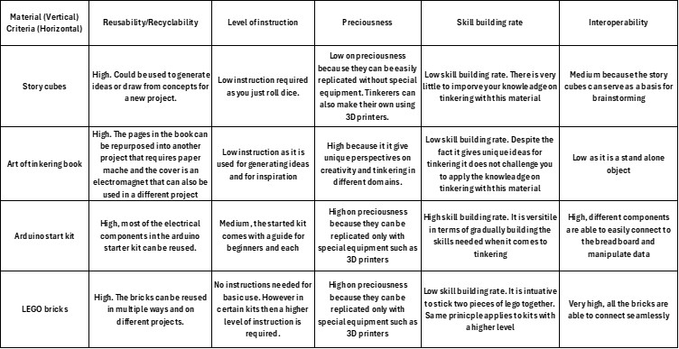

Building block project
Session 2 of Mastering Tinkering we had the opportunity to explore various tool kits such as LEGO and Arduino. The main objective was to get a feel for and experiment with different materials and what materials would be suitable for tinkering. A table was drawn up with the most important properties and each material was ranked as low medium or high with a justification. Since I would like to focus more on the electronics domain in terms of tinkering. I mainly looked at materials that sparked imagination for a new project that involved electronics and the properties of each chosen material was assessed in terms of how I would use them. The materials that I was drawn to were the make do kits as I found it easy to use intuitive and interactive. The table below shows the material which I would want to tinker with as well as the criteria that I found the most useful.
The second part of the session was a mini demonstration about animatronics and participants were left to their own devices (pun intended) to create a creature that displayed movement using 3 servo motors and record a cycle on a midi board. Participants were split into groups of 5 and started to brainstorm about what creature should be invented. The group that I was in decided to build a giraffe and the motors would move its neck and legs. We gathered the necessary materials such as cardboard (for the body) and popsicle sticks (for the legs and neck) as well as had decorations for eyes and ears so to make the ‘creature’ more cartoonish looking. To produce the final result. We then connected the servo motors and got to control the movements of the giraffe. The images illustrate the process of making the creature and how the servo motors were placed. and what was done to make the body of the giraffe.
Building block project

Playground project